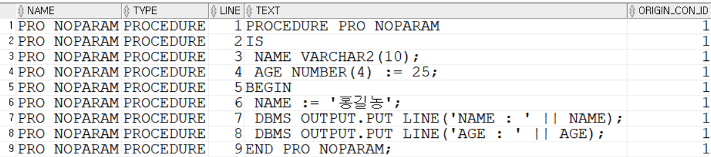
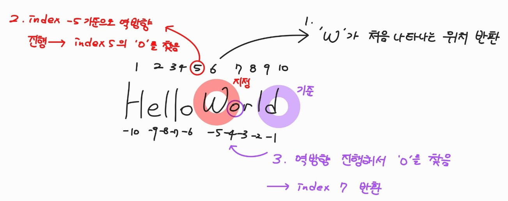
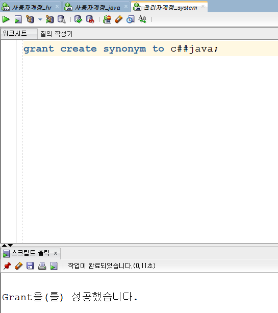
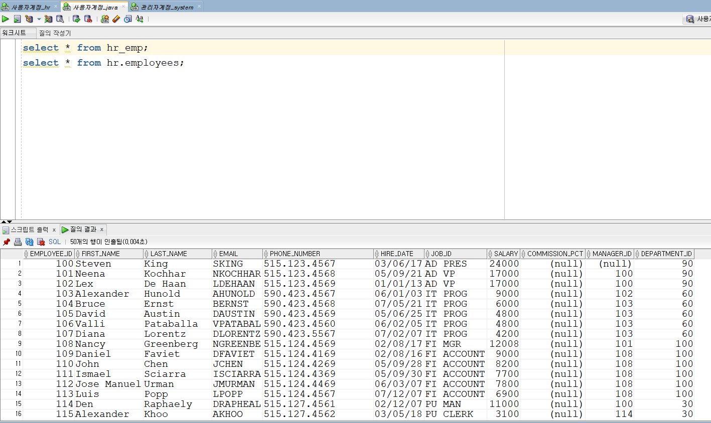
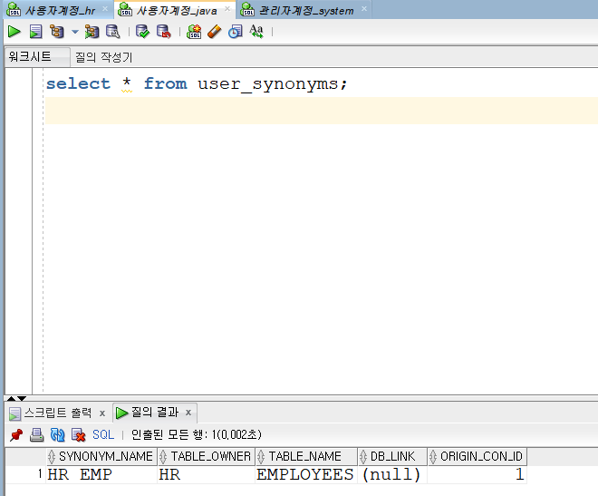
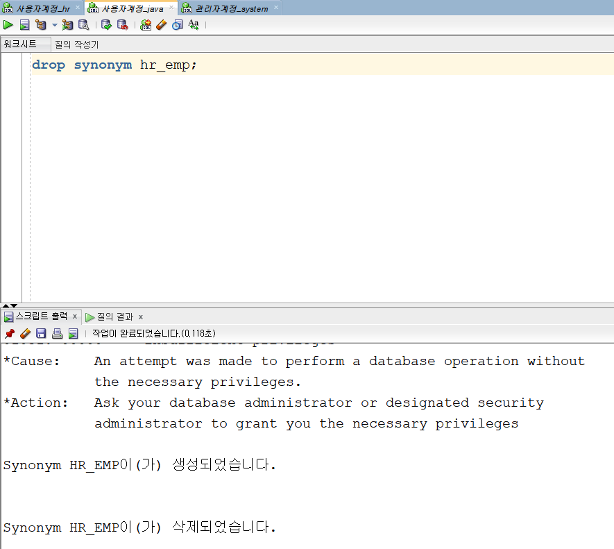

- 테이블 스페이스란?
테이블이 저장되는 공간Oracle에서는 테이블이 저장될 공간인테이블 스페이스를 먼저 만들고 나서 테이블을 생성한다.- 각각의 테이블을 테이블스페이스별로 나누어서 관리와 퍼포먼스의 향상을 가지고 오는 것이다.
- 테이블스페이스를 생성하면 정의된 용량만큼 미리 확보한 테이블스페이스가 생성되어지고 생성되어진 테이블스페이스에 테이블의 데이터가 저장된다.
- 예를 들면 많은 데이터가 쌓일 게시판 테이블은 기본용량 100MB, 자동 확장 10MB로 테이블스페이스를 만들어서 그곳에 게시판 테이블을 만들어 쓰면 게시판 데이터는 그곳에 100MB 까지 데이터가 저장되고 용량 초과 시 자동적으로 10MB 단위로 테이블 스페이스의 크기는 확장된다.
📄 Oracle
- 테이블 생성
create table 연산( x int, -- 고정형, int는 소수이하 자른다(반올림 된다) y number, -- 가변형, number는 소수이하 놔둔다 z number(10,3));create table dbtest( name varchar2(15), -- char(고정형), varchar2(가변형) age number, height number(10, 2), logtime date);create table user2( idx number constraint PKIDX primary key, id varchar2(10) constraint UNID unique, name varchar2(10) constraint NOTNAME not null, phone varchar2(15), address varchar2(50), score number(6,2) constraint CKSCORE check(score >= 0 and score <= 100), 6은 총 자릿수, 2는 소수점 자리수 subject_code number(5), hire_date date default sysdate, marriage char(1) default 'N' constraint CKMARR check(marriage in('Y','N')));number(6,2)⇒ -9999.99 ~ 9999.99 저장 가능- 하지만 0~100까지로 제약조건 다시 걸어놓음
- 자료형
- number: 정수, 실수형 모두 들어옴
- int: 정수형 숫자(고정형)
- char: 문자, 문자열(고정형) → 자바처럼 문자 1개 x
- varchar/varchar2: 문자, 문자열(고정형)
- date: 날짜형
- clob: 문자열
- blob: 바이너리형 (그림, 음악, 동영상 ) → 안씀 ⇒ DB에는 파일명만, 이미지는 pc or 클라우드에 저장
- 제약 조건
- not null : 해당 컬럼에 NULL을 포함되지 않도록 함
- unique : 해당 컬럼 또는 컬럼 조합 값이 유일하도록 함
(무결성 제약조건)- primary key : 각 행을 유일하게 식별할 수 있도록 함
- references table(column) : 해당 컬럼이 참조하고 있는 (부모)테이블의 특정 (컬럼, 테이블) 컬럼 값들과 일치하거나 또는 NULL이 되도록 보장함
- check : 해당 컬럼에 특정 조건을 항상 만족시키도록 함
- 제약 조건 확인
- constraint_name: 이름
- constraint_type: 유형
- P : primary key
- U : unique
- R : reference
- C : check, not null
- search_condition : check조건 내용
- r_constraint_name : 참조테이블의 primary key 이름
- delete_rule : 참조테이블의 primary key 컬럼이 삭제될 때 적용되는 규칙
- 레코드(튜플) 추가
insert into 연산(x, y, z) values(25, 36, 12.34567); insert into 연산(x, y, z) values(25.34567, 36.34567, 12.34567); insert into 연산(x, y) values(25.666, 36.88888); -- 25.666 (반올림 되서 26 나온다) insert into 연산(z, y, x) values(1, 2, 3); -- 순서가 바뀌어도 된다, 대신 순서대로 들어간다필드명 생략가능하게 되면필드를빠짐없이 순서대로입력해야한다insert into 연산 values(25, 36, 1234567.3456); -- 유효숫자는 최대7자리 insert into 연산 values(25, 36, 12345678.3456); -- error
- 트랜잭션
commit하기 전까지의 모든 명령어
- insert, update, delete에 lock이 걸려있다.
- [ 트랜잭션 처리 ]
- commit하기 이전까지 SQL 명령어들
- table에서 null은 java의 null이 아니다 →
비어있다
- 검색 (select 문)
select name, age, height, logtime from dbtest; select name, age from dbtest; select * from dbtest; select * from dbtest where name='홍길동'; select * from dbtest where name like '홍%'; select * from dbtest where name like '_홍%'; select * from dbtest where name like '__홍%'; select * from dbtest where name='hong'; -- 데이터는 대소문자 가린다. select * from dbtest where lower(name) = 'hong'; -- lower() 소문자 select * from dbtest where upper(name) = 'HONG'; -- upper() 대문자 select * from dbtest where lower(name) = 'HONG'; -- upper() 대문자 select * from dbtest where name like '%동%' and age<20; select * from dbtest where age is null; select * from dbtest where age is not null; select name, age+height from dbtest; select name, age+height as "나이와 키의 합" from dbtest; select * from dbtest order by name asc; -- asc는 생략가능 select * from dbtest order by name desc;
- delete
- 테이블에 포함된 기존데이터를 삭제
- 데이터는 삭제되고 테이블 구조는 유지됨
- truncate
- 테이블의 데이터를 전부 삭제하고
사용하고 있던 공간을 반납
- 테이블의 데이터를 전부 삭제하고
- sequence
select * from tab; purge recyclebin; -- 휴지통 비우기 drop table 연산; -- 연산 테이블 삭제 -> 휴지통에는 남아 있음 select * from tab; select * from recyclebin; -- 휴지통의 data 확인하기 flashback table 연산 to before drop; -- 휴지통 내용 복원 drop table 연산 purge; -- 휴지통 안거치고 바로 삭제 ------------------------------------------ create sequence test; -- 시퀀스 생성 drop sequence test; -- 휴지 조각도 없이 날라감 create sequence test increment by 2 start with 1 maxvalue 9 cycle nocache; select test.nextval from dual; -- test 시퀀스의 값을 순회한다. next.val -> 다음값 select test.currval from dual; -- cur.val -> 현재 값 select * from user_sequences; -------------------------------------- select * from dbtest; delete dbtest; commit; show user; select * from dbtest;
- 07.26
create table board_java( seq number, id varchar2(30), name varchar2(15), subject varchar2(100), content varchar2(500), logtime date ); create sequence board_java_seq Increment by 1 start with 1 NOMAXVALUE NOCACHE; commit; drop sequence board_java_seq; -- 고유한 숫자값은 가지기 위해서 사용하는 객체 drop table board_java; select * from board_java;- Sequece는 primary key를 위해서 만들었다 → ㄹㅇ 구시대
📄 SQL 문
- 데이타 조작어(DML : Data Manipulation Language) : insert, update, delete, merge
- 데이타 정의어(DDL : Data Definition Language) : create, alter, drop, rename, truncate
- 데이터 검색 : select
- 트랜젝션 제어 : commit, rollback, savepoint
- 데이타 제어어(DCL : Data Control Language) : grant, revoke
SELECT 문
select [distinct] [컬럼1, 컬럼2,.....][as 별명][ || 연산자][*]
from 테이블명
[where 조건절]- distinct : 중복제거
- * : 모든
- 조건절 : and, or, like, in, between and, is null, is not null
- 예시 문제
- 별명붙이기(as는 생략가능)
employees테이블의 모든 사원의 사원번호, 이름(last_name), 급여 검색
- 조건) title 사원번호, 이름 ,급여로 출력할것
select employee_id as 사원번호, last_name as "이 름", salary "급여" from employees;- 데이터는 ‘ ‘ 를 붙여야 하고, 제목은 빈공백도 들어갈 수 있기 때문에 “ “ 를 붙인다.
- 조건) title 사원번호, 이름 ,급여로 출력할것
- 연결 연산자 ( | | ) : 컬럼을 연결해서 출력 → 자바의
+역할- frist_name과 last_name을 연결해서 출력하시오
select first_name || ' ' || last_name as "이 름" from employees;- ' ' 는 데이터
- frist_name과 last_name을 연결해서 출력하시오
- 중복 제거(distinct)
- employees 테이블에서 부서ID를 중복 없이 출력하시오
select DISTINCT Job_id from employees;
- employees 테이블에서 부서ID를 중복 없이 출력하시오
- oracle 날짜 형식
- oracle은 날짜를 삽입을 하면 05-10-21로 나온다(2005-10-21)
create table a( hire_date DATE ); INSERT INTO a (hire_date) VALUES (TO_DATE('21-09-2005', 'dd-MM-yyyy')); select * from a; - 또 다른 예시코드
SELECT EMPLOYEE_ID "사원 번호", FIRST_NAME || ' ' || LAST_NAME "이 름", HIRE_DATE "입사일" FROM EMPLOYEES WHERE HIRE_DATE LIKE '05/%/%'; SELECT EMPLOYEE_ID "사원 번호", FIRST_NAME || ' ' || LAST_NAME "이 름", TO_CHAR(HIRE_DATE, 'YYYY-MM-DD') "입사일" FROM EMPLOYEES WHERE HIRE_DATE>=TO_DATE('2005-01-01','YYYY-MM-DD') AND HIRE_DATE<TO_DATE('2006-01-01','YYYY-MM-DD');
- oracle은 날짜를 삽입을 하면 05-10-21로 나온다(2005-10-21)
- 별명붙이기(as는 생략가능)
employees테이블의 모든 사원의 사원번호, 이름(last_name), 급여 검색
연산자
= : 같다 !=, ^=, <> : 같지 않다
=, <=, >, < : 크거나 같다, 작거나 같다, 크다, 작다 and, or, between and, in, like, is null, is not null
형식
select [distinct] [컬럼1, 컬럼2.......][*]
from 테이블명
[where 조건절]
[order by 컬럼명 asc|desc ]예시 코드
- 사원명, 부서ID, 입사일을 부서별로 내림차순 정렬하시오
SELECT LAST_NAME,DEPARTMENT_ID, HIRE_DATE FROM EMPLOYEES ORDER BY 2 DESC; -- ORDER BY 2 => 두번째인 DEPARTMENT_ID 기준으로 정렬
- 사원명, 부서ID, 입사일을 부서별로 내림차순 정렬하시오. (단, 같은 부서가 있을 때는 입사일순으로 정렬하시오)
SELECT LAST_NAME, DEPARTMENT_ID, HIRE_DATE FROM EMPLOYEES ORDER BY 2 DESC, 3 ASC;
단일행 함수
- 숫자함수 : mod, round, trunc, ceil
- 문자함수 : lower, upper, length, substr, ltrim, rtrim, trim
- 날짜함수 : sysdate, add_month, month_between
- 변환함수 (1) 암시적(implict) 변환 : 자동 VARCHAR2 또는 CHAR ------> NUMBER VARCHAR2 또는 CHAR ------> DATE NUMBER ------> VARCHAR2 DATE ------> VARCHAR2 (2) 명시적(explict) 변환 : 강제 TO_NUMBER TO_DATE <------ ------> NUMBER CHARACTER DATE ------> <------ TO_CHAR TO_CHAR
- 날짜 형식
- YYYY : 네 자리 연도(숫자) (ex. 2005)
- YEAR : 연도(문자)
- MM : 두 자리 값으로 나타낸 달 (ex. 01, 08, 12)
- MONTH : 달 전체이름 (ex. January)
- MON : 세 자리 약어로 나타낸 달 (ex. Jan)
- DY : 세 자리 약어로 나타낸 요일 (ex. Mon)
- DAY : 요일전체 (ex. Monday)
- DD : 숫자로 나타낸 달의 일 (ex. 31, 01)
- HH, HH24(24시간제)
- MI
- SS
- 숫자 형식
- 9 : 숫자를 표시
- 0 : 0을 강제로 표시
- $ : 부동$기호를 표시
- L : 부동 지역통화기호 표시
- . : 소수점출력
- , : 천단위 구분자 출력
- 그룹(집계)함수 : avg, sum, max, min, count
- 기타함수 : nvl, dcode, case
예시코드
- 이름을 소문자로 바꾼 후(형 변환) 검색
select employee_id, last_name, department_id from employees where lower(last_name) = 'higgins';
- 10을 3으로 나눈 나머지 구하시오
select mod(10, 3) from dual; → 가상의 테이블- oracle
dual 테이블DUAL테이블은 단일 행과 단일 열을 포함하는 테이블로, 주로 함수를 테스트하거나, 특정 값 또는 계산 결과를 얻기 위해 사용된다.DUAL테이블은 오라클 데이터베이스 엔진에서 특별히 최적화되어 있어 매우 빠르게 쿼리를 처리할 수 있습니다.DUAL테이블은 오라클 데이터베이스에서 간단한 테스트와 연산을 수행할 때 매우 유용하며, 그 편리함으로 인해 자주 사용됩니다.
- oracle
- 35765.357을 반올림(round)
- 3 5 7 6 5 . 3 5 7
- -4 -3 -2 -1 0 1 2 3 째 자리로 반올림
select round(35765.357, 2) from dual; -- 35765.36 -- 소숫점 2째 자리로 반올림 select round(35765.357, 0) from dual; -- 35765 -- 소수점 0번째 자리로 반올림 select round(35765.657, 0) from dual; -- 35766 select round(35765.357, -3) from dual; -- 36000 -> 1000의 자리로 반올림
- 35765.357을 내림(trunc)
select trunc(35765.357, 2) from dual; -- 35765.35 select trunc(35765.357, 0) from dual; -- 35765 select trunc(35765.357, -3) from dual; -- 35000
- concat('문자열1', '문자열2) : 문자열의 결합(문자열1+문자열2)
select concat('Hello', ' World') from dual;
- 문자열의 길이 구하기
- length('문자열') : 문자열의 길이
- lengthb('문자열') : 문자열의 길이 (byte 기준)
- Oracle Express → 한 글자당 3byte
- Oracle Server → 한 글자당 2byte
- 예시

create table text( str1 char(20), -- 고정 문자 길이 str2 varchar2(20)); -- 가변 문자 길이insert into text(str1, str2) values('angel', 'angel'); insert into text(str1, str2) values('사천사', '사천사');select lengthb(str1), lengthb(str2) from text; 20 5 20 9 select length(str1), length(str2) from text; 20 5 14 3
- 지정한 문자열 찾기 : instr
select instr('HelloWorld', 'W') from dual; -- 6 select instr('HelloWorld', 'o', -5) from dual; -- 5 select instr('HelloWorld', 'o', -1) from dual; -- 7
- 지정한 길이의 문자열을 추출 : substr(표현식, 시작 index, 개수)
select substr('I am very happy', 6, 4) from dual; -- very select substr('I am very happy', 6) from dual; -- very happy
- width_bucket: 최소 - 최대값을 설정하고 구간을 나눈 다음 위치 찾기
select width_bucket(74, 0, 100, 10) from dual; -> result : 8- 0~9 / 10~19 / 20 ~ 29/ … / 70 ~ 79 사이 구간에 74가 존재 ⇒ 8번째임
- 공백제거 : ltrim(왼), rtrim(오른), trim(양쪽)
select rtrim('test ') || 'exam' from dual; -> result : testexam
- sysdate : 시스템에 설정된 시간표시
select sysdate from dual; > result : 24/08/07 select to_char(sysdate, 'YYYY"년" MM"월" DD"일"') as 오늘날짜 from dual; -> result : 2024년 08월 07일 select to_char(sysdate, 'HH"시" MI"분" SS"초"') as 오늘날짜 from dual; -> result : 10시 09분 06초 => 12시간 형식 select to_char(sysdate, 'HH24"시" MI"분" SS"초"') as 오늘날짜 from dual -> result : 10시 09분 25초 => 24시간 형식- 날짜는 기본이 단위는
초단위이다.
- 날짜는 기본이 단위는
- add_months(date, 달수) : 날짜에 달수 더하기
select add_months(sysdate, 7) from dual; -> result : 25/03/07 / 현재 24/08/07
- last_day(date) : 해당달의 마지막 날
select last_day(sysdate) from dual; -> result : 24/08/31 select last_day('2004-02-01') from dual; -- 29 select last_day('2005-02-01') from dual; -- 28
- 문제 3번
- 오늘부터 이번 달 말까지 총 남은 날수를 구하시오
select round((last_day(sysdate)- sysdate),0) from dual;round는 초단위로 날짜를 계산하기 때문임
- 오늘부터 이번 달 말까지 총 남은 날수를 구하시오
- months_between(date1, date2) : 두 날짜 사이의 달 수
select months_between('95-10-21', '94-10-20') from dual; result : 12.03225806451612903225806451612903225806- 날짜는 기본이 단위는
초단위이다.
select round(months_between('95-10-21', '94-10-20'), 0) from dual; result : 12- 두 날짜 사이의 달수를 초단위로 가져오게 된다. 이렇게 되면 너무 복잡한 결과 값이 나오기 때문에
round키워드를 붙여서 단순화 시킨다.
- 날짜는 기본이 단위는
- 날짜 형식 RRRR 형식으로 반환
- 날짜가 세기가 바뀌면 출력 형식이 어지러워짐 → RR 형식으로 바꿔야함
select to_char(to_date('97/9/30', 'YY-MM-DD') , 'YYYY-MON-DD') from dual; ← 2097 select to_char(to_date('97/9/30', 'RR-MM-DD') , 'RRRR-MON-DD') from dual; ← 1997 select to_char(to_date('17/9/30', 'YY-MM-DD') , 'YYYY-MON-DD') from dual; ← 2017 select to_char(to_date('17/9/30', 'RR-MM-DD') , 'RRRR-MON-DD') from dual; ← 2017
- 문제 4번
- 2005년 이전에 고용된 사원을 찾으시오
select last_name, to_char(hire_date,'dd-mon-yyyy') from employees where hire_date<'2005-01-01';
- fm 형식: 무조건 0을 갖다붙이는 날짜 형식 때문에 0을 빼기 위한 명령어
select last_name, hire_date from employees where hire_date='05/09/30'; select last_name, hire_date from employees where hire_date='05/9/30'; select to_char(sysdate, 'YYYY-MM-DD') from dual; select to_char(sysdate, 'YYYY-fmMM-DD') from dual; -- 2011-03-01 select to_char(to_date('2011-03-01','YYYY-MM-DD'), 'YYYY-MM-DD') from dual; -- 2011-3-1 select to_char(to_date('2011-03-01','YYYY-MM-DD'), 'YYYY-fmMM-DD') from dual; -- 2011-3-01 select to_char(to_date('2011-03-01','YYYY-MM-DD'), 'YYYY-fmMM-fmDD') from dual;
- count(컬럼명), max(컬럼명), min(컬럼명), avg(컬럼명), sum(컬럼명) 함수
- employees테이블에서 급여의 최대, 최소, 평균, 합을 구하시오( 단, 평균은 소수이하절삭, 합은 세자리마다 콤마 찍고 ￦표시)
select max(salary), min(salary), trunc(avg(salary), 0), to_char(sum(salary), 'L9,999,999') from employees;
- distinct : 중복 제거 / ⭐ nvl : null 값을 0으로 대체
select department_id from employees; -- 107 select count(department_id) from employees; -- 106 select count(*) from employees; -- 107 select count(distinct department_id) from employees; -- 11 select count(distinct nvl(department_id, 0)) from employees; -- 12 select distinct nvl(department_id, 0) from employees; -- nvl은 null값을 0으로 대치distinct nvl(department_id, 0): 만약 값이 없다면 0으로 대체
- 문제 5번
- 커미션(commission_pct)을 받지 않은 사원의 인원수를 구하시오
SELECT count(*) from employees where nvl(commission_pct,0)=0;
- 커미션(commission_pct)을 받지 않은 사원의 인원수를 구하시오
- 문제 7번
- 사원테이블에서 사원번호, 이름, 급여, 커미션, 연봉을 출력하시오
- 조건1) 연봉은 $ 표시와 세자리마다 콤마를 사용하시오
- 조건2) 연봉 = 급여 * 12 + (급여 * 12 * 커미션)
- 조건3) 커미션을 받지 않는 사원도 포함해서 출력하시오
select employee_id, last_name, nvl(commission_pct,0), to_char(salary*12+(salary*12*nvl(commission_pct,0)), '$999,999,999') as "연봉" from employees; - 만약
'$9,999'로 한다면 ##### 이렇게 나옴 → 자리 수가 부족하다는 뜻
- 문제 8번
- 매니저가 없는 사원의 MANAGER_ID를 1000번으로 표시
- 조건1) 제목은 사원번호, 이름, 매니저ID
- 조건2) 모든 사원을 표시하시오
select employee_id, last_name, nvl(manager_id,1000) from employees;
- decode(표현식, 검색1,결과1, 검색2,결과2....[default]), case
- 표현식과 검색을 비교하여 결과 값을 반환 다르면 default
if(a==1) A; else if (a==2) B; else if (a==3) C; else D ------------------ switch(a){ case 1: A; case 2: B; case 3: C; default: D;- decode 표현식, case 표현식
decode(a, 1, A, 2, B, 3, C, D) ------------- case when a=1 then A; when a=2 then B; when a=3 then C; else D; end 같은 값이라면 case a when 1 then A; when 2 then B; when 3 then C; else D; end- 예시 문제
- 업무 id가 'SA_MAN' 또는 ‘SA_REP'이면 'Sales Dept' 그 외 부서이면 'Another'로 표시
- decode
select job_id, decode(job_id, 'SA_MAN', 'Sales Dept', 'SA_REP', 'Sales Dept', 'Another') "분류" from employees order by 2 - case 1
select job_id, case job_id when 'SA_MAN' then 'Sales Dept' when 'SA_REP' then 'Sales Dept' else 'Another' end "분류" from employees order by 2; - case 2
select job_id, case when job_id='SA_MAN' then 'Sales Dept' when job_id='SA_REP' then 'Sales Dept' else 'Another' end "분류" from employees order by 2;
- 문제 6번
- 급여가 10000 미만이면 초급, 20000 미만이면 중급 그 외면 고급을 출력하시오
- 조건1) 제목은 사원번호, 사원명, 구분으로 표시하시오
- 조건2) 구분 컬럼으로 오름차순 정렬하고, 같으면 사원명 컬럼으로 오름차순 하시오
- 조건3) case 사용하시오
select employee_id "사원번호", last_name "사원명", case when salary<10000 then '초급' when salary<20000 then '중급' else '고급' end "구분" from employees order by 3, 2 ASC;
- rank함수 : 전체 값을 대상으로 순위를 구함
전체 대상으로 하기 때문에 데이터가 너무 많으면 과부화 걸림 → 잘라줘야 함- rank(표현식) within group(order by 표현식)
- rank() over(쿼리파티션) → 전체 순위를 표시
- 급여가 3000인 사람의 상위 급여 순위를 구하시오
select rank(3000) within group(order by salary desc) "rank" from employees; - 전체사원의 급여순위를 구하시오
select employee_id, salary, rank() over(order by salary desc) "rank" from employees;
- first_value함수 : 정렬된 값 중에서 첫 번째 값 반환
- 전체사원의 급여와 함께 각부서의 최고급여를 나타내고 비교하시오
select employee_id, salary, department_id, first_value(salary) over(partition by department_id order by salary desc) "highsal_deptID" from employees;- group을 지을 때 data가 많으면 쪼개서 계산함
Group by & Having
- group by : 그룹함수(max, min, sum, avg, count..)와 같이 사용
- having : 묶어 놓은 그룹의 조건
- 부서별 급여 평균을 구하시오
- 조건
- 소수 이하는 반올림
- 세자리 마다 콤마, 화폐 단위(￦)로 표시
- 부서별로 오름차순 정렬하시오
- 평균급여가 5000이상인 부서만 표시하시오
- 조건
📄 Join
종류
- Inner join : 같은 것끼리만 연결
- Outer join : 한쪽을 기준(모두포함)해서 연결
- left join : 왼쪽 컬럼 모두포함
- right join : 오른쪽 컬럼 모두포함
- full join : 왼쪽, 오른쪽 모두 포함
- self join : 자기 자신 테이블과 연결
- cross join : 모든 경우의 수로 연결
- non equijoin : 범위에 속하는지 여부를 확인
- n개 테이블 조인 : 여러 개의 테이블 조인
(Inner) Join
: 같은 것끼리만 조인
- 사원테이블과 부서테이블에서
부서가 같을 경우사원번호, 부서번호, 부서이름을 출력하시오- 그냥 평범한 where 절 썼을 경우 (오라클 전용 구문)
select employee_id, employees.department_id, department_name from employees, departments where employees.department_id = departments.department_id; - join 사용
select employee_id, department_id, department_name from employees join departments using(department_id);- using 속성을 기준으로 두 테이블이 동일한 레코드에 대해
employee_id, department_id, department_name의 결과 값을 보여달라
- using 속성을 기준으로 두 테이블이 동일한 레코드에 대해
- 그냥 평범한 where 절 썼을 경우 (오라클 전용 구문)
- 두 개의 컬럼이 일치 하는 경우, 부서ID와 매니저ID가 같은 사원을 연결 하시오
- 오라클 전용 구문
select e.last_name, d.department_id, d.manager_id from employees e, departments d where e.department_id=d.department_id and e.manager_id=d.manager_id; - inner join 사용
select last_name, department_id, manager_id from employees inner join departments using(department_id, manager_id);
- 오라클 전용 구문
Left (Outer) Join
왼쪽 테이블은 모두 포함하여 조인, 사원테이블과 부서테이블에서 부서번호가 같은 사원을 조인하시오. → 왼쪽은 모두 포함이어야 하기 때문에 왼쪽은 null이 포함될 수도 있다.- + 를 이용한 오라클 전용 구문 사용
select e.last_name, d.department_id, d.department_name from employees e, departments d where e.department_id = d.department_id(+);- + 로 추가하는 개념이라고 생각하면 될듯
- left join 사용
select last_name, department_id, department_name from employees left join departments using(department_id);
- + 를 이용한 오라클 전용 구문 사용
Right (Outer) Join
오른쪽 테이블은 모두 포함하여 조인, 사원테이블과 부서테이블에서 부서번호가 같은 사원을 조인하시오 → 오른쪽은 모두 포함이어야 하기 때문에 오른쪽은 null이 포함될 수도 있다.- + 를 이용한 오라클 전용 구문 사용
select e.last_name, d.department_id, d.department_name from employees e, departments d where e.department_id(+) = d.department_id; - right join 사용
select last_name, department_id, department_name from employees right join departments using(department_id);
- + 를 이용한 오라클 전용 구문 사용
Full Join
- 왼쪽, 오른쪽 테이블을 모두 포함하여 조인, 사원테이블과 부서테이블에서 부서번호가 같은 사원을 조인하시오 → 둘 다 null 값이 있을 수 있다.
select last_name, department_id, department_name from employees full join departments using(department_id);
Self Join
: 자기 자신의 테이블과 조인하는 경우 사원과 관리자를 연결하시오
사원번호 사원이름 관리자
- --------------------------------
101 Kochhar King
EMPLOYEES
- -----------------------------------------------------------------
employee_id, last_name(사원이름) last_name(관리자)
조건 employee_id = manager_id
select employee_id, manager_id, last_name from employees; -- e
select employee_id, last_name from employees; -- m
방법1
select e.employee_id as 사원번호,
e.last_name as 사원이름,
m.last_name as 관리자
from employees e, employees m
where m.employee_id = e.manager_id;
방법2
select e.employee_id as 사원번호,
e.last_name as 사원이름,
m.last_name as 관리자
from employees e
join employees m on(m.employee_id = e.manager_id);
ex12) cross join : 모든 행에 대해 가능한 모든 조합을 생성하는 조인
select * from countries, locations; → 575레코드
select * from countries cross join locations;
Cross Join
: 자기 자신의 테이블과 조인하는 경우 사원과 관리자를 연결하시오
사원번호 사원이름 관리자
- --------------------------------
101 Kochhar King
EMPLOYEES
- -----------------------------------------------------------------
employee_id, last_name(사원이름) last_name(관리자)
조건 employee_id = manager_id
select employee_id, manager_id, last_name from employees; -- e
select employee_id, last_name from employees; -- m
방법1
select e.employee_id as 사원번호,
e.last_name as 사원이름,
m.last_name as 관리자
from employees e, employees m
where m.employee_id = e.manager_id;
방법2
select e.employee_id as 사원번호,
e.last_name as 사원이름,
m.last_name as 관리자
from employees e
join employees m on(m.employee_id = e.manager_id);
ex12) cross join : 모든 행에 대해 가능한 모든 조합을 생성하는 조인
select * from countries, locations; → 575레코드
select * from countries cross join locations;
Non Equijoin
컬럼값이 같은 경우가 아닌 범위에 속하는지 여부를 확인 할 때
on ( 컬럼명 between 컬럼명1 and 컬럼명2)
create table salgrade(
salvel varchar2(2),
lowst number,
highst number);
insert into salgrade values('A', 20000, 29999);
insert into salgrade values('B', 10000, 19999);
insert into salgrade values('C', 0, 9999);
commit;
select * from salgrade;
select last_name, salary, salvel
from employees
join salgrade on(salary between lowst and highst)
order by salary desc;
ex14) n(여러)개의 테이블은 조인
업무ID 같은 사원들의 사원이름, 업무내용, 부서이름을 출력하시오
(EMPLOYEES, JOBS, DEPARTMENTS 테이블을 조인)
[분석]
EMPLOYEES JOBS DEPARTMENTS
- ----------------------------------------------------------
department_id job_id department_id
job_id
select last_name, job_title, department_name
from employees
join departments using(department_id)
join jobs using(job_id);
두 개 이상의 쿼리 결과를 하나로 결합시키는 연산자
→ 두 개 이상 select문에 집합 연산자 사용하여 결과 추출
테이블 구조만 복사 1=0;
create table employees_role as select * from employees where 1=0Union
: 앙쪽 쿼리를 모두 포함, 중복 결과는 1번만 포함
- employee_id, last_name이 같을 경우 중복제거 하시오
select employee_id, last_name from employees union select employee_id, last_name from employees_role;
Union ALL
: 양쪽 쿼리를 모두 포함, 중복 결과도 모두 포함, 중복 결과도 모두 포함
- employee_id, last_name이 같을 경우 중복을 허용 하시오
select employee_id, last_name from employees union all select employee_id, last_name from employees_role;
Intersect
: 양쪽 쿼리 결과에 모두 포함되는 행만 표현 → 교집합
- employees와 employees_role에서 중복되는 레코드의 사원명단을 구하시오
select employee_id, last_name from employees intersect select employee_id, last_name from employees_role;
Minus
: 쿼리1 결과에 포함되고 쿼리2 결과에는 포함되지 않는 행만 표현 → 차집합
- employees_role과 중복되는 레코드는 제거하고 employees에만 있는 사원명단을 구하시오\
select employee_id, last_name from employees minus select employee_id, last_name from employees_role;
💡 Union ALL을 제외한 나머지 set operator는 order by를 진행한다. 중복 제거를 위해 order by를 하기 때문에 튜플이 많으면 느려진다.
📄 Subquery
단일 행 서브쿼리
Main Query
Sub Query
select ~
select ~ --> 1개의 결과 - 연산자
> , < , >=, <= , <>(! =)
예시 코드
Q) Neena 사원의 부서명을 알아내시오
select department_name
from departments
where department_id = (select department_id from employees where first_name='Neena');- subquery에서 department_id가 90인 값이 1개 나옴
Q) Neena 사원의 부서에서 Neena 사원보다 급여를 많이 받는 사원들의 last_name, department_id, salary 구하시오
select last_name, department_id, salary
from employees
where department_id = (select department_id from employees where first_name='Neena')
and salary > (select salary from employees where first_name='Neena');(select department_id from employees where first_name='Neena')→ 결과 1개> (select salary from employees where first_name='Neena')→ 결과 1개- 따라서 select문의 결과가 1개이면
단일 행 서브쿼리이다.
Q) 최저급여를 받는 사원들의 이름과 급여를 구하시오
select last_name, salary from employees where salary= (select min(salary) from employees);Q) 부서별 급여 합계 중 최대급여를 받는 부서의 부서명과 급여합계를 구하시오
select sum(salary) from employees group by department_id; 부서별 급여 합계 구하기
select MAX(sum(salary)) from employees group by department_id; -- 최대 급여 부서 구하기
select department_name, sum(salary) from employees join departments using (department_id)
Group by department_name;
select department_name, sum(salary) from employees join departments using (department_id)
Group by department_name having sum(salary) = (select MAX(sum(salary))
from employees group by department_id);
다중 행 서브쿼리
Main Query
Sub Query
select ~
select ~ --> 여러 개의 결과 - 연산자
< any : 비교 대상 중 최대값보다 작음
> any : 비교 대상 중 최소값보다 큼
= any : in연산자와 동일
< all : 비교 대상 중 최솟값보다 작음
> all : 비교대상중 최대값보다 큼
Q) 'ST_MAN' 직급보다 급여가 많은 'IT_PROG' 직급의 last_name, job_id, salary 직원들을 조회하시오
select last_name, job_id, salary from employees where job_id='IT_PROG'
and salary > any (select salary from employees where job_id='ST_MAN');Q) 'IT_PROG' 직급 중 가장 많이 받는 사원의 급여보다 더 많은 급여를 받는 'FI_ACCOUNT' 또는 'SA_REP' 직급 직원들을 조회하시오
select last_name as "사원명", job_id as "업무ID", to_char(salary,'fm999,999,999')||'원' as "급여"
from employees where job_id='FI_Account' or job_id='SA_REP'
and salary > any(select MAX(salary) from employees where job_id='IT_PROG') order by salary desc;Q) 'IT_PROG'와 같은 급여를 받는 사원들의 이름, 업무ID, 급여를 전부 구하시오
select last_name, job_id, salary
from employees
where salary in (select salary from employees where job_id='IT_PROG');상관쿼리(correlated subquery)
- SQL에서 서브쿼리(Subquery)가 메인 쿼리(Main Query)의 각 행에 의존하여 실행되는 쿼리이다.
- 즉, 서브쿼리가 메인 쿼리의 특정 행 값을 사용하여 평가된다
- 일반적인 서브쿼리와 달리, 서브쿼리가 메인 쿼리의 각 행마다 한 번씩 실행된다는 특징이 있다.
: EXIST 연산자는 하위 쿼리에 레코드가 있는지 테스트하는 사용 된다 : EXIST 연산자는 하위 쿼리가 하나 이상의 레코드를 반환하면 true를 반환 : EXIST 연산자는 일반적으로 상관 관계가 있는 하위 쿼리와 함께 사용 : EXIST 연산자는 거의 * 로 구성된다
SELECT e.first_name, e.last_name, e.salary
FROM employees e
WHERE e.salary = (
SELECT MAX(e2.salary)
FROM employees e2
WHERE e2.department_id = e.department_id
);
- 메인 쿼리:
employees테이블에서 직원의 이름, 성, 급여를 선택합니다. - 서브쿼리: 각 행에 대해, 해당 직원이 속한 부서에서 가장 높은 급여를 가진 직원을 찾기 위해 서브쿼리가 실행됩니다. 이때 서브쿼리는 메인 쿼리의
e.department_id를 참조하여 해당 부서의 최대 급여를 계산합니다. - 조건: 서브쿼리의 결과(해당 부서의 최대 급여)가 메인 쿼리의
e.salary와 같은 경우만 선택됩니다.
group by rollup : a, b별 집계(Subtotal 구하기)
Q) 부서별, 직무ID별 급여평균구하기(동일부서에 대한 직무별 평균급여)
조건 1) 반올림해서 소수 2째자리까지 구하시오
조건 2) 제목은 Job_title, Department_name, Avg_sal로 표시하시오
select department_name, job_title, round(avg(salary), 2) as "Avg_sal"
from employees
join departments using(department_id)
join jobs using(job_id)
group by rollup(department_name, job_title);group by cube : a별 집계 또는 b별 집계
Q) 부서별, 직무ID별 급여평균구하기(부서를 기준으로 나타내는 평균급여)
select department_name, job_title, round(avg(salary), 2) as "Avg_sal"
from employees
join departments using(department_id)
join jobs using(job_id)
group by cube(department_name, job_title);group by grouping sets
Q) 직무별 평균급여와 전체사원의 평균급여를 함께 구하시오
select job_title, round(avg(salary), 2) as "Avg_sal"
from employees
join jobs using(job_id)
group by grouping sets((job_title), ( )); ← () All Rows의 역할📄 View
- 다른 테이블이나 뷰에 포함된 맞춤 표현
join하는 테이블의 수가 늘어나거나 질의문이 길고 복잡해지면 작성이 어려워지고 유지보수가 어려울 수 있다.
이럴 때는 스크립트를 만들어두거나 stored query를 사용해서 데이터베이스 서버에 저장해두면 필요할 때마다 호출해서 사용할 수 있다.
- 뷰와 테이블의 차이는 뷰는 실제로 데이터를 저장하고 있지 않다는 점이다
- 베이스테이블(base table) : 뷰를 통해 보여지는 실제 테이블
- 선택적인 정보만 제공 가능
형식
create [or replace][force|noforce] view 뷰이름 [(alias [,alias,.....)]
as 서브쿼리
[with check option [constraint 제약조건이름]]
[with read only [constraint 제약조건이름]]- create or replace : 지정한 이름의 뷰가 없으면 새로 생성, 동일 이름이 있으면 수정
- force | noforce
- force : 베이스테이블이 존재하는 경우에만 뷰 생성가능
- noforce : 베이스테이블이 존재하지 않아도 뷰 생성가능
- alias
- 뷰에서 생성할 표현식 이름(테이블의 컬럼 이름의미)
- with check option : 뷰를 통해 접근가능한 데이터에 대해서만 DML작업가능
- with read only : 뷰를 통해 DML작업 안됨
📄 Synonym
Synonym은 오라클 객체(테이블, 뷰, 시퀀스, 프로시저)에 대한 대체이름(Alias)를 말한다. Synonym은 Object가 아니라 Object에 대한 직접적인 참조이다. 데이터베이스의 투명성을 제공하기 위해 사용한다 - 다른 유저의 객체를 참조할 때 많이 사용한다객체의 긴 이름을 짧게 만들어 SQL 코딜을 단순화 할 수 있다.객체의 실제 이름, 소유자, 위치를 감추기 때문에데이터베이스의 보안을 유지할 수 있다.
종류
- Private Synonym
- 전용 Synonym은 특정 사용자만 사용할 수 있다
- Public Synonym
- 공용 Synonym은 사용자 그룹이 소유하면 그 데이터베이스에 있는 모든 사용자가 공유한다
형식
CREATE [PUBLIC] SYNONYM 시노님이름 FOR 객체이름실습
- HR 계정으로 접속해서 C##JAVA 계정에게 EMPLOYEES 테이블을 조작할 수 있는 권한 부여
- C##JAVA 계정에 접속해서 Synonym(동의어)를 생성
- hr계정의 employees 테이블을 java계정에서 hr_emp 동의어로 사용한다
- 먼저 SYNONYM를 생성할 수 있는 권한이 있어야 한다.
- 따라서 SYSTEM 계정(관리자 계정)에서 권한을 부여해야 한다.
- hr계정의 employees 테이블을 java계정에서 hr_emp 동의어로 사용한다
- SYSTEM 계정(관리자 계정)에서 권한을 부여

- 다시 C##JAVA 계정에 SYNONYM 생성
- SYNONYM 조회

- SYNONYM 목록 조회

- SYNONYM 삭제

📄 PL/SQL(Procedural Language extension to SQL)
PL/SQL이란?
SQL만으로 구현이 어렵거나 구현 불가능한 작업을 수행하기 위해 오라클에서 제공하는 프로그래밍 언어이다. 변수, 조건, 반복처리 등 다양한 기능을 사용할 수 있다.
BLOCK이란
명령어들의 집합체
형식
DECLARE
선언부 – 변수, 상수, 커서 등을 선언
- 생략 가능
BEGIN
실행하는 명령어
EXCEPTION
예외처리 – 생략 가능
END;실습
set serveroutput on;
begin
dbms_output.put_line('Hello PL/SQL!!');
end;set serveroutput on;: 현재 화면에다가 출력하겠습니다. → 해줘야 출력 결과가 뜸
- CMD창에서 실행할 때
- 코드를 복붙하면 행 번호가 붙음
- ‘/’ 를 해줘야 결과가 나옴 → CMD 창에서 실행할 때
변수
- 데이터를 일시적으로 저장하는 요소이다.
- 선언부(declare)에 작성한다.
- 선언한 변수에 값을 할당하기 위해서는 :=를 사용한다.
변수의 자료형
- 스킬라형
- 숫자, 문자열, 날짜 등과 같이 오라클에서 기본으로 정의해 놓은 자료형
- NUMBER : 소수점을 포함할 수 있는 최대 38자리 숫자 데이터
- CHAR / VARCHAR2
- DATE
- BOOLEAN (PL/SQL에서만 사용할 수 있는 논리 자료형, true, false, NULL을 포함)
- 숫자, 문자열, 날짜 등과 같이 오라클에서 기본으로 정의해 놓은 자료형
- 참조형
- 오라클 데이터베이스에 존재하는 특정 테이블 열의 자료형이나 하나의 행 구조를 참조하는 자료형이다.
- 열을 참조할 때는 %TYPE, 행을 참조할 때는 %ROWTYPE을 사용한다
- 복합형
- 여러 종류 및 개수의 데이터를 저장하기 위해 사용자가 직접 정의하는 자료형이다.
- 컬렉션, 레코드로 구분된다.
- LOB형
- 대용량의 텍스트, 이미지, 동영상, 사운드 데이터 등 대용량 데이터를 저장하기 위한 자료형이다.
- BLOB, CLOB 등이 있다.
실습
declare
name varchar2(10);
age number(4) := 25;
begin
name := '홍길동';
dbms_output.put_line('name : ' || name);
dbms_output.put_line('age : ' || age);
end;
/
result :
name : 홍길동
age : 25
PL/SQL 프로시저가 성공적으로 완료되었습니다.- 마지막에 ‘/’ 를 통해 끝났다고 표시해줘야 함
- 선언부(declare) :
name과age선언 DBMS_OUTPUT.PUT_LINE은 콘솔에 문자열을 출력하는 함수- 만약 숫자 초기화 안했다면,
age :이렇게 출력
declare
v_no departments.department_id%type :=50;
begin
dbms_output.put_line('v_no : '||v_no);
end;
/
result:
v_no : 50
=> select * from departments where department_id=50;departments.department_id%TYPE는departments테이블의department_id열의 데이터 타입을 참조하여v_no변수의 데이터 타입을 설정한다.- 밑의 select문과 의미가 동일하다.
DECLARE
V_DEPT DEPARTMENTS%ROWTYPE; -- V_DEPT 변수를 DEPARTMENTS 테이블의 행 구조로 선언
BEGIN
SELECT DEPARTMENT_ID, DEPARTMENT_NAME, MANAGER_ID, LOCATION_ID
INTO V_DEPT
FROM DEPARTMENTS
WHERE DEPARTMENT_ID = 50;
-- INTO V_DEPT를 사용하여 SELECT 한 결과를 V_DEPT에 대입한다.
-- V_DEPT가 가지고 있는 필드 개수, 자료형은 SELECT한 결과의 개수와 자료형이 같아야 한다.
DBMS_OUTPUT.PUT_LINE('DEPARTMENT_ID : ' || V_DEPT.DEPARTMENT_ID);
DBMS_OUTPUT.PUT_LINE('DEPARTMENT_NAME : ' || V_DEPT.DEPARTMENT_NAME);
DBMS_OUTPUT.PUT_LINE('MANAGER_ID : ' || V_DEPT.MANAGER_ID);
DBMS_OUTPUT.PUT_LINE('LOCATION_ID : ' || V_DEPT.LOCATION_ID);
END;
/
result :
DEPARTMENT_ID : 50
DEPARTMENT_NAME : Shipping
MANAGER_ID : 121
LOCATION_ID : 1500V_DEPT는DEPARTMENTS테이블의 구조를 기반으로 한레코드 변수이다.%ROWTYPE은DEPARTMENTS테이블의 모든 열(필드)의 구조와 데이터 타입을 가진 변수를 정의한다.- select 문은 다음과 같은 결과가 나온다.
- 다음 결과를
INTO V_DEPT를 통해 V_DEPT에 넣는다. - 그러면 위의 레코드가 V_DEPT에 들어가게 된다
- 다음 결과를
- 이후
V_DEPT레코드 속성값을 명령어에 따라 출력을 한다.
상수
한번 저장한 값이 프로그램이 종료될 때까지 변하지를 않는다
형식
변수명 CONSTANT 자료형 := 값 또는 표현식
//
변수의 기본값 지정
[형식]
변수명 자료형 DEFAULT 값 또는 표현식
//
변수에 NULL 값 막기
[형식]
변수명 자료형 NOT NULL := 값 또는 표현식실습
declare
pi constant number := 3.141592;
apple varchar2(10) default '사과';
id varchar2(10) not null := 'hong';
pwd varchar2(10) not null default '1234';
begin
dbms_output.put_line('pi : '||pi);
dbms_output.put_line('apple : '||apple);
dbms_output.put_line('id : '||id);
dbms_output.put_line('pwd : '||pwd);
end;
/
result :
PI : 3.141592
APPLE : 사과
ID : hong
PWD : 1234- 만약 not null에
id varchar2(10) not null;이렇게 초기화 되지 않은 상태라면 다음과 같이 에러가 나옴- ORA-06550: NOT NULL로 정의된 변수는 초기치를 할당하여야 합니다
조건 제어문
IF 문
① IF – THEN ② IF – THEN – ELSE ③ IF – THEN – ELSIF
CASE문
① 단순 CASE문
- 비교 기준이 되는 변수 또는 식을 명시한다
② 검색 CASE문
- 비교기준을 명시하지 않고 각각의 WHEN 절에서 조건식을 명시한다
- IF-THEN-ELSIF와 큰 차이가 없다.
실습 - IF 문
declare
num number :=15;
begin
if mod(num,2) = 1 then
dbms_output.put_line(num || '는 홀수이다');
end if;
end;
/
result:
15는 홀수이다END IF;:IF조건문의 끝을 나타낸다.IF조건이 참일 때만 이 블록이 실행한다.
declare
num number :=16;
begin
if mod(num,2) = 0 then
dbms_output.put_line(num || '는 짝수이다');
else
dbms_output.put_line(num || '는 홀수이다');
end if;
end;
/
result :
16는 짝수이다DECLARE
SCORE NUMBER := 87;
BEGIN
IF SCORE >= 90 THEN
DBMS_OUTPUT.PUT_LINE('A 학점');
ELSIF SCORE >= 80 THEN
DBMS_OUTPUT.PUT_LINE('B 학점');
ELSIF SCORE >= 70 THEN
DBMS_OUTPUT.PUT_LINE('C 학점');
ELSIF SCORE >= 60 THEN
DBMS_OUTPUT.PUT_LINE('D 학점');
ELSE
DBMS_OUTPUT.PUT_LINE('F 학점');
END IF;
END;
/
result :
B 학점실습 - CASE 문
declare
score number :=87;
begin
case trunc(score/10)
when 9 then DBMS_OUTPUT.PUT_LINE('A 학점');
when 8 then DBMS_OUTPUT.PUT_LINE('B 학점');
when 7 then DBMS_OUTPUT.PUT_LINE('C 학점');
when 6 then DBMS_OUTPUT.PUT_LINE('D 학점');
else DBMS_OUTPUT.PUT_LINE('F 학점');
end case;
end;
/
result :
B 학점end case;로 case문이 끝났다는 것을 나타내줘야 한다.
반복 제어문
① 기본 LOOP
- 형식
LOOP 명령어; END LOOP;
② WHILE LOOP
- 형식
- 조건이 참이면 반복하고, 거짓이면 반복문을 벗어난다.
WHILE 조건 LOOP 명령어; END LOOP;
③ FOR LOOP
- 시작값부터 종료값까지 1씩 증가한다
FOR i IN 시작값 .. 종료값 LOOP
명령어;
END LOOP;
FOR i IN REVERSE 시작값 .. 종료값 LOOP -- 역순 (0 .. 4 라고 쓰는 것은 변하지 않는다)
명령어;
END LOOP;④ Cusor FOR LOOP
- 반복문을 중단 / 특정 반복 주기를 건너뛰는 명령어
- EXIT : 수행 중인 반복 종료
- EXIT WHEN : 반복 종료를 위한 조건을 지정
- CONTINUE : 수행 중인 반복의 현재 주기를 건너뛴다
- CONTINUE WHEN : 조건식을 지정하고 조건식을 만족하면 현재 반복 주기를 건너뛴다
실습 - 기본 Loop
declare
num number :=0;
begin
loop
dbms_output.put_line(num);
num := num +1;
exit when num > 4;
end loop;
end;
/
result :
0
1
2
3
4
PL/SQL 프로시저가 성공적으로 완료되었습니다.실습 - While Loop
declare
num number :=0;
begin
while num < 4 loop
dbms_output.put_line(num);
num := num+1;
exit when num >4;
end loop;
end;
/
result :
0
1
2
3
PL/SQL 프로시저가 성공적으로 완료되었습니다.실습 - FOR Loop
begin
for i in 0..4 loop -- i는 선언부에서 정의하는 것이 아니라 for loop에서 정의한다.
dbms_output.put_line(i);
end loop;
end;
/
0
1
2
3
4
PL/SQL 프로시저가 성공적으로 완료되었습니다.- reverse for loop
begin
for i in reverse 0..4 loop
dbms_output.put_line(i);
end loop;
end;
/
result :
4
3
2
1
0
PL/SQL 프로시저가 성공적으로 완료되었습니다.- CONTINUE WHEN
begin
for i in 0..4 loop
continue when mod(i,2)=1; -- 홀수일 때 continue 진행
dbms_output.put_line(i);
end loop;
end;
/DECLARE
total_sum NUMBER := 0; -- sum 대신 total_sum을 사용
BEGIN
FOR i IN 1..10 LOOP
CONTINUE WHEN MOD(i, 2) = 0;
DBMS_OUTPUT.PUT_LINE(i);
total_sum := total_sum + i; -- sum 대신 total_sum을 사용
END LOOP;
DBMS_OUTPUT.PUT_LINE('홀수 전체의 합은 : ' || total_sum);
END;
/
- 변수명
sum으로 하면 에러 →SUM은 SQL에서 집계 함수로 사용되는 예약어
저장 서브 프로그램(stored subprogram)
- 여러 번 사용할 목적으로 이름을 지정하여 오라클에 저장해 두는 PL/SQL 프로그램
- 저장할 때 한 번 컴파일 한다.
- 오라클에 저장하여 공유할 수 있어서 메모리, 성능, 재사용성 등 여러 면에서 장점이 있다.
- 대표적인 구현 방식은 프로시저, 함수, 패키지, 트리거이다
PL/SQL 블록의 담점
- PL/SQL 블록은 작성한 내용을 한 번 실행하는 데 사용한다
- PL/SQL 블록은 이름이 정해져 있지 않아서
익명 블록이라고 한다. - 익명 블록은 오라클에 저장되지 않기 때문에 한 번 실행한 후에 다시 실행하려면 PL/SQL 블록을 다시 작성하여 실행해야 한다.
프로시저
- 특정 처리 작업을 수횅하는데 사용하는 저장 서브 프로그램
- 파라미터를 사용할 수 있고 사용하지 않을 수 있다.
- 파라미터 없는 프로시저 형식
CREATE [OR REPLACE] PROCEDURE 프로시저명 IS | AS -- DECLARE 키워드는 사용하지 않는다. 선언부 BEGIN 실행부 EXCEPTION 예외 처리부 END [프로시저 이름]; - 프로시저 실행
execute 프로시저 이름;
- 실습
- 프로시저 생성
CREATE OR REPLACE PROCEDURE PRO_NOPARAM IS NAME VARCHAR2(10); AGE NUMBER(4) := 25; BEGIN NAME := '홍길동'; DBMS_OUTPUT.PUT_LINE('NAME : ' || NAME); DBMS_OUTPUT.PUT_LINE('AGE : ' || AGE); END PRO_NOPARAM; / - 프로시저 실행
EXECUTE PRO_NOPARAM; NAME : 홍길동 AGE : 25 PL/SQL 프로시저가 성공적으로 완료되었습니다.- PL/SQL에서 프로시저 실행
BEGIN PRO_NOPARAM; END; / NAME : 홍길동 AGE : 25 PL/SQL 프로시저가 성공적으로 완료되었습니다. - 프로시저 확인
SELECT * FROM USER_SOURCE WHERE NAME = 'PRO_NOPARAM'; - 프로시저 삭제
DROP PROCEDURE PRO_NOPARAM; Procedure PRO_NOPARAM이(가) 삭제되었습니다.
- 프로시저 생성
- 파라미터를 사용하는 프로시저 형식
[형식] CREATE [OR REPLACE] PROCEDURE 프로시저명 ( 파라미터 이름 [MODES] 자료형 [ := | DEFAULT ], -- 자리수 지정 및 NOT NULL 사용 불가능파라미터 이름 [MODES] 자료형 [ := | DEFAULT ], -- ;이 아니라 ,로 지정 ... ) IS | AS -- DECLARE 키워드는 사용하지 않는다. 선언부 BEGIN 실행부 EXCEPTION 예외 처리부 END [프로시저 이름]; - IN 모드 파라미터
- 프로시저 실행에 필요한 값을 직접 입력받는 형식의 파라미터를 지정할 때 사용한다
- 실습
- 프로시저 생성 - IN 모드 파라미터
CREATE OR REPLACE PROCEDURE PRO_PARAM_IN ( NAME IN VARCHAR2, AGE NUMBER, PHONE VARCHAR2 := '010-1234-5678', ADDR VARCHAR2 DEFAULT '서울' ) IS BEGIN DBMS_OUTPUT.PUT_LINE('NAME : ' || NAME); DBMS_OUTPUT.PUT_LINE('AGE : ' || AGE); DBMS_OUTPUT.PUT_LINE('PHONE : ' || PHONE); DBMS_OUTPUT.PUT_LINE('ADDR : ' || ADDR); END PRO_PARAM_IN; /- 프로시저 실행
EXECUTE PRO_PARAM_IN('홍길동', 25, '010-1111-1111', '부산'); NAME : 홍길동 AGE : 25 PHONE : 010-1111-1111 ADDR : 부산 PL/SQL 프로시저가 성공적으로 완료되었습니다.EXECUTE PRO_PARAM_IN('홍길동', 25); NAME : 홍길동 AGE : 25 PHONE : 010-1111-1111 ADDR : 부산 PL/SQL 프로시저가 성공적으로 완료되었습니다. NAME : 홍길동 AGE : 25 PHONE : 010-1234-5678 ADDR : 서울 PL/SQL 프로시저가 성공적으로 완료되었습니다.
- 프로시저 실행
- 프로시저 생성 - IN 모드 파라미터
- OUT 모드 파라미터
- 프로시저 실행 후 호출한 프로그램으로 값을 반환한다.
- 프로시저 생성
CREATE OR REPLACE PROCEDURE PRO_PARAM_OUT ( EMPNO IN EMPLOYEES.EMPLOYEE_ID%TYPE, EMPNAME OUT EMPLOYEES.LAST_NAME%TYPE, SAL OUT EMPLOYEES.SALARY%TYPE ) IS BEGIN SELECT LAST_NAME, SALARY INTO EMPNAME, SAL FROM EMPLOYEES WHERE EMPLOYEE_ID = EMPNO; END PRO_PARAM_OUT; /
함수
- 오라클 함수는 내장함수와 사용자 정의 함수로 나눌 수 있다.
- 함수는 반환 값의 자료형과 실행부에서 반환할 값을 RETURN절 및 RETURN문으로 명시해야 한다.
- 형식
[형식] CREATE [OR REPLACE] FUNCTION 함수명 ( 파라미터 이름 [IN] 자료형 [ := | DEFAULT ], -- 프로시저와 달리 IN모드만 지정한다. 파라미터 이름 [IN] 자료형 [ := | DEFAULT ], -- ;이 아니라 ,로 지정 ... ) RETURN 자료형 IS | AS 선언부 BEGIN 실행부 RETURN (반환값); EXCEPTION 예외 처리부 END [함수 이름]; - 실습
- 함수 생성
-- 함수 생성 CREATE OR REPLACE FUNCTION FUNC_TAX ( SALARY IN NUMBER ) RETURN NUMBER IS TAX NUMBER := 0.033; BEGIN RETURN (ROUND(SALARY - (SALARY * TAX))); END FUNC_TAX; / - 함수 실행
-- 함수 실행 DECLARE PAY NUMBER; BEGIN PAY := FUNC_TAX(3000000); DBMS_OUTPUT.PUT_LINE('PAY : ' || PAY); END; / - SQL문에서 함수 실행
SELECT FUNC_TAX(5000000) FROM DUAL; - 함수 삭제
-- 함수 삭제 DROP FUNCTION FUNC_TAX;
- 함수 생성
트리거
데이터베이스 안의 특정 상황이나 동작, 즉 이벤트가 발생하면 자동으로 실행되는 기능을 정의하는 PL/SQL 서브 프로그램이다.
- 트리거는 특정 이벤트가 발생할 때 자동으로 작동하는 서브프로그램이므로, 프로시저, 함수와 같이 EXECUTE 또는 PL/SQL 블록에서 따로 실행하지 못한다
- 형식
[형식] CREATE [OR REPLACE] TRIGGER 트리거 이름 BEFORE | AFTER INSERT | UPDATE | DELETE ON 테이블명 REFERENCING OLD as old | New as new FOR EACH ROW WHEN 조건식 FOLLOW 트리거 이름, 트리거 이름,... ENABLE | DISABLE DECLARE 선언부 BEGIN 실행부 EXCEPTION 예외 처리 END;
Before
- DML 명령어가 실행하기 전에 작동하는 트리거가 생성
- 실습
- emp_tab 만들기
create table emp_tab as select * from employees; - 트리거 생성
create or replace trigger tri_emp_weekend before insert or update or delete on emp_tab begin if to_char(sysdate,'DY') in ('토','일') then if inserting then RAISE_APPLICATION_ERROR(-20000, '주말 사원정보 추가 불가'); ELSIF UPDATING THEN RAISE_APPLICATION_ERROR(-20001, '주말 사원정보 수정 불가'); ELSIF DELETING THEN RAISE_APPLICATION_ERROR(-20002, '주말 사원정보 삭제 불가'); ELSE RAISE_APPLICATION_ERROR(-20003, '주말 사원정보 변경 불가'); END IF; END IF; END; /before insert or update or delete on emp_tab- EMP_TAB 테이블에 INSERT, UPDATE, DELETE 실행 될 때 트리거 작동
if to_char(sysdate,'DY') in ('토','일') then if inserting then RAISE_APPLICATION_ERROR(-20000, '주말 사원정보 추가 불가'); ELSIF UPDATING THEN RAISE_APPLICATION_ERROR(-20001, '주말 사원정보 수정 불가'); ELSIF DELETING THEN RAISE_APPLICATION_ERROR(-20002, '주말 사원정보 삭제 불가'); ELSE RAISE_APPLICATION_ERROR(-20003, '주말 사원정보 변경 불가'); END IF; END IF;- 주말(’토’, ‘일’) 일 때, insert, delete, update 불가.
- 평일에 수정
-- 평일에는 수정이 잘 된다. UPDATE EMP_TAB SET SALARY=30000 WHERE EMPLOYEE_ID = 100; SELECT * FROM EMP_TAB; 1 행 이(가) 업데이트되었습니다. - 시스템의 날짜를 주말로 삽입
insert into emp_tab(employee_id, email, salary) values (100, 'HONG', 25000); 명령의 34 행에서 시작하는 중 오류 발생 - insert into emp_tab(employee_id, email, salary) values (100, 'HONG', 25000) 오류 보고 - ORA-01400: NULL을 ("HR"."EMP_TAB"."LAST_NAME") 안에 삽입할 수 없습니다
- emp_tab 만들기
AFTER
- DML 명령어가 실행된 후에 작동하는 트리거
- 실습
- emp_tab_log 테이블 생성
create table emp_tab_log( tablename varchar2(10), -- 테이블 이름 dml_type varchar2(10), -- DML 명령어 empno number(4), -- 사원번호 empname varchar2(30), -- user(계정)이름 change_date date); - 트리거 생성
- emp_tab_log 테이블 생성